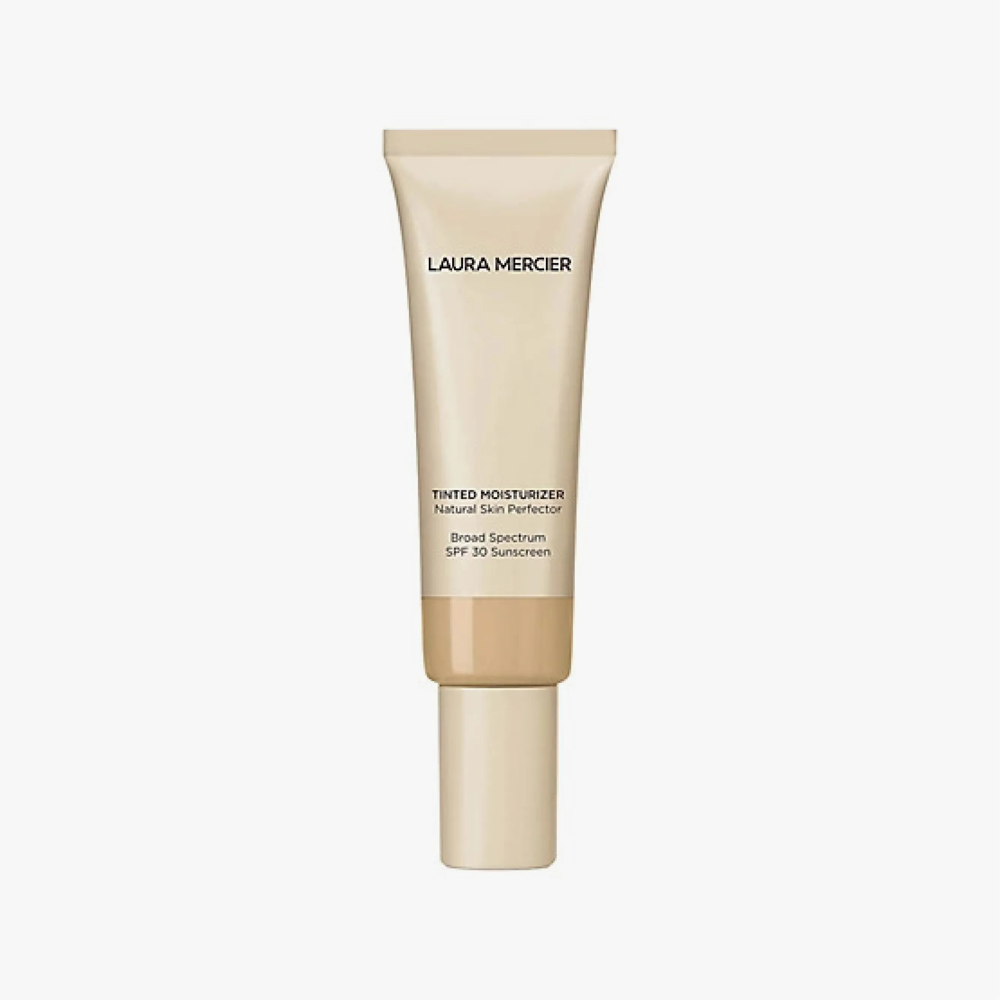
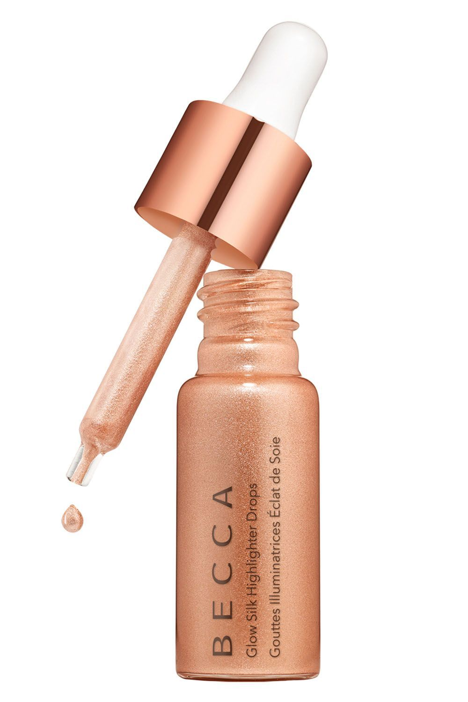
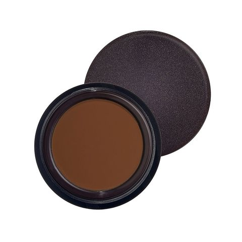
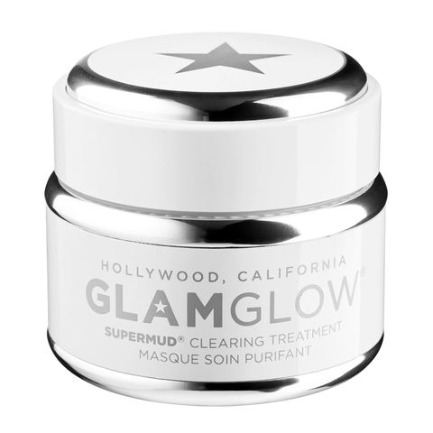

Cosmetics are constituted mixtures of chemical compounds derived from either natural sources, or synthetically created ones.Cosmetics have various purposes. Those designed for personal care and skin care can be used to cleanse or protect the body or skin. Cosmetics designed to enhance or alter one's appearance (makeup) can be used to conceal blemishes, enhance one's natural features (such as the eyebrows and eyelashes), add color to a person's face, or change the appearance of the face entirely to resemble a different person, creature or object. Cosmetics can also be designed to add fragrance to the body.
Cosmetics designed for skin care can be used to cleanse, exfoliate and protect the skin, as well as replenishing it, through the use of cleansers, toners, serums, moisturizers, and balms. Cosmetics designed for more general personal care, such as shampoo and body wash, can be used to cleanse the body. Cosmetics designed to enhance one's appearance (makeup) can be used to conceal blemishes, enhance one's natural features (such as the eyebrows and eyelashes), add color to a person's face and—in the case of more extreme forms of makeup used for performances, fashion shows and people in costume—can be used to change the appearance of the face entirely to resemble a different person, creature or object. Techniques for changing appearance include contouring, which aims to give shape to an area of the face. Cosmetics can also be designed to add fragrance to the body.
Historically, the absence of regulation of the manufacture and use of cosmetics, as well as the absence of scientific knowledge regarding the effects of various compounds on the human body for much of this time period, led to a number of negative adverse effects upon those who used cosmetics, including deformities, blindness and in some cases death. Many cosmetic products available at this time were still either chemically dubious or derived from natural resources commonly found in the kitchen, such as food colouring, berries and beetroot. Examples of the prevalent usage of harmful cosmetics include the use of ceruse (white lead) throughout a number of different cultures, such as during the Renaissance in the West, and blindness caused by the mascara Lash Lure during the early 20th century. During the 19th century, there was a high number of incidences of lead poisoning due to the fashion for red and white lead makeup and powder, leading to swelling and inflammation of the eyes, weakened tooth enamel and blackening skin, with heavy use known to lead to death. Usage of white lead was not confined only to the West, with the white Japanese face makeup known as oshiroi also produced using white lead. In the second part of the 19th century, scientific advances in the production of makeup lead to the creation of makeup free of hazardous substances such as lead.[citation needed] Throughout the later 19th century and early 20th century, changes in the prevailing attitudes towards cosmetics led to the wider expansion of the cosmetics industry. In 1882, English actress and socialite Lillie Langtry became the poster-girl for Pears of London, making her the first celebrity to endorse a commercial product.She allowed her name to be used on face powders and skin products.During the 1910s, the market in the US was developed by figures such as Elizabeth Arden, Helena Rubinstein, and Max Factor. These firms were joined by Revlon just before World War II and Estée Lauder just after. By the middle of the 20th century, cosmetics were in widespread use by women in nearly all industrial societies around the world, with the cosmetics industry becoming a multibillion-dollar enterprise by the beginning of the 21st century.The wider acceptance of the use of cosmetics led some to see makeup as a tool utilised in the oppression and subjection of women to unfair societal standards. In 1968 at the feminist Miss America protest, protestors symbolically threw a number of feminine products into a "Freedom Trash Can",with cosmetics among the items the protestors called "instruments of female torture"and accoutrements of what they perceived to be enforced femininity.